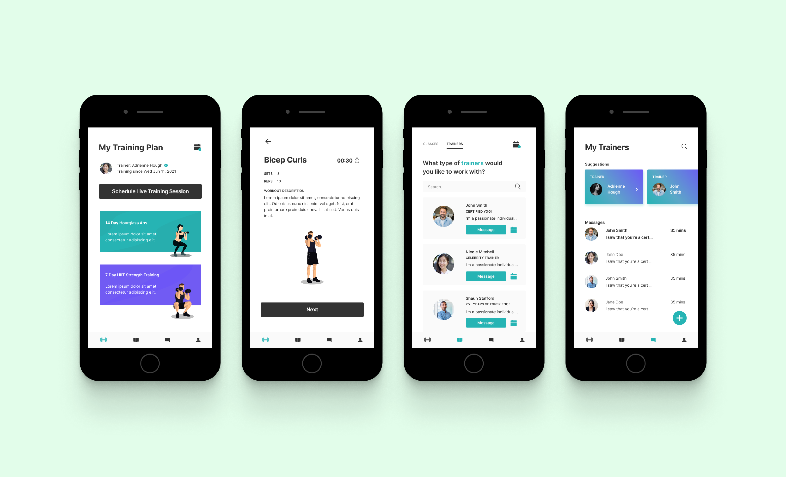
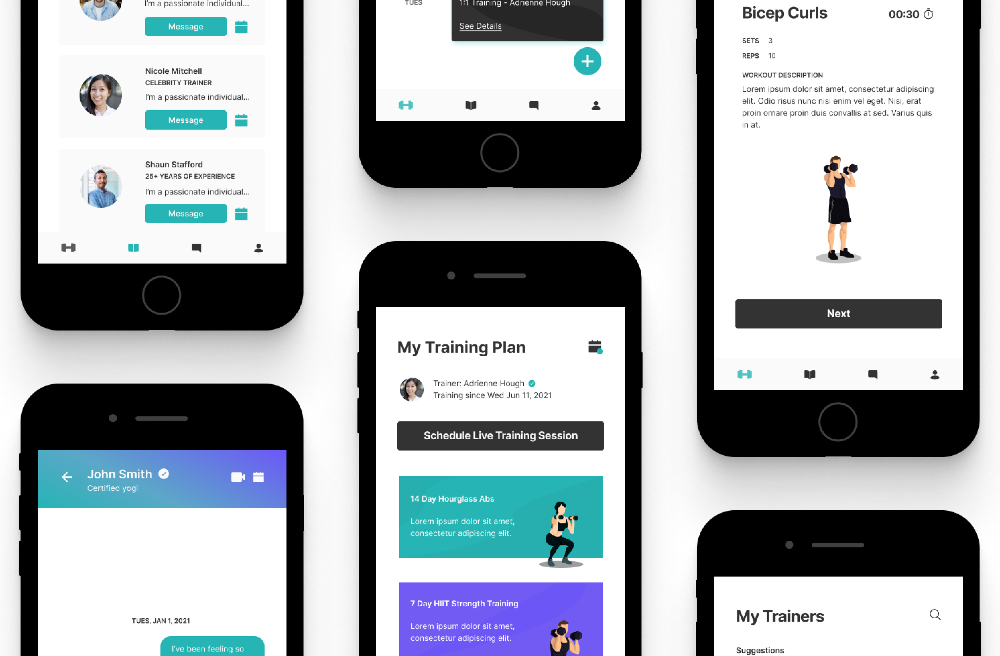
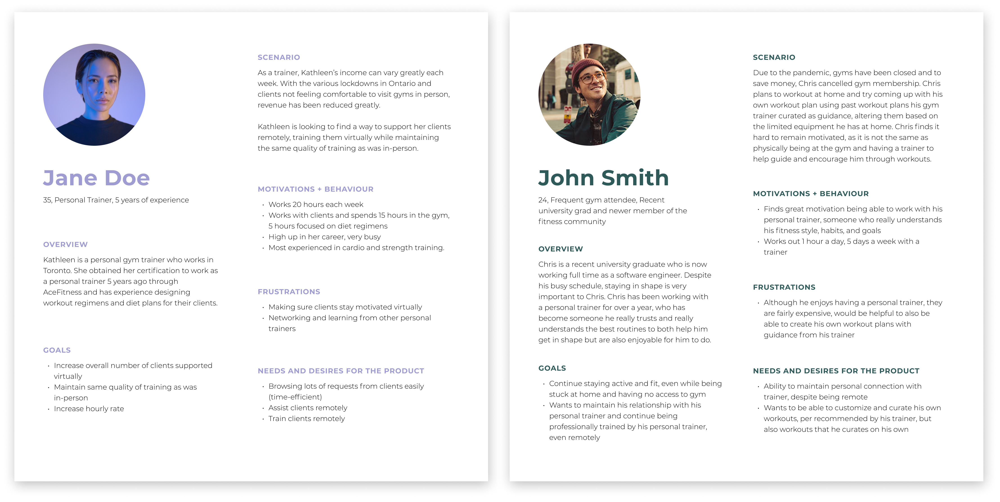
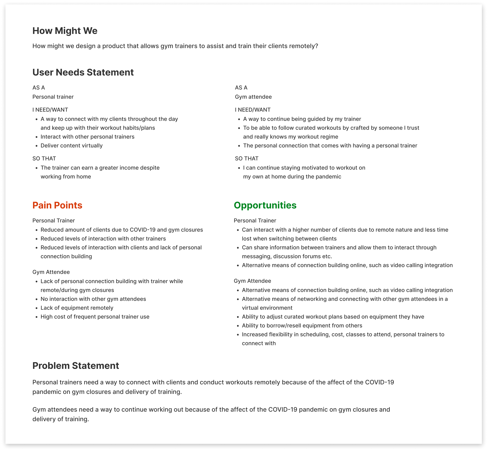
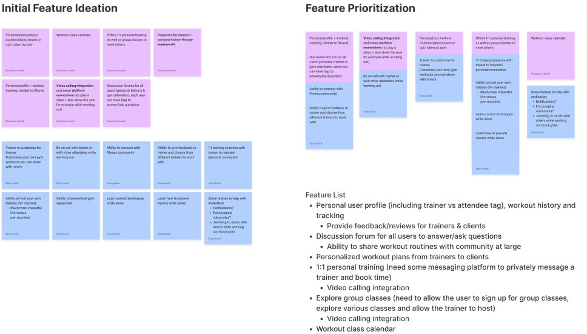
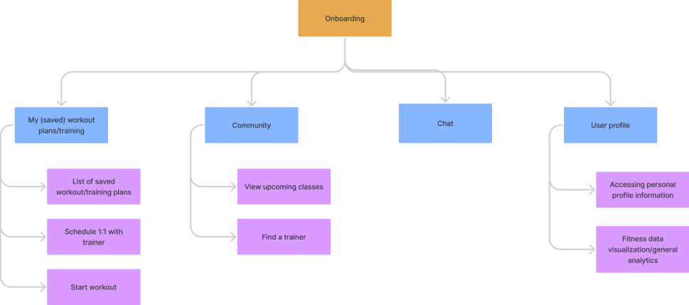
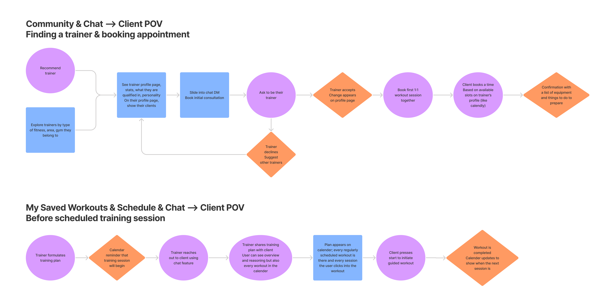
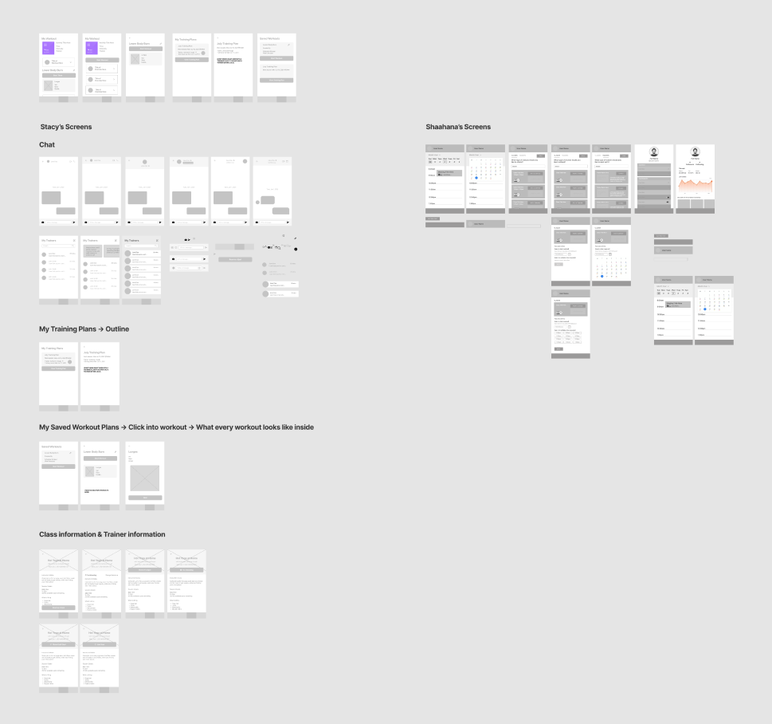
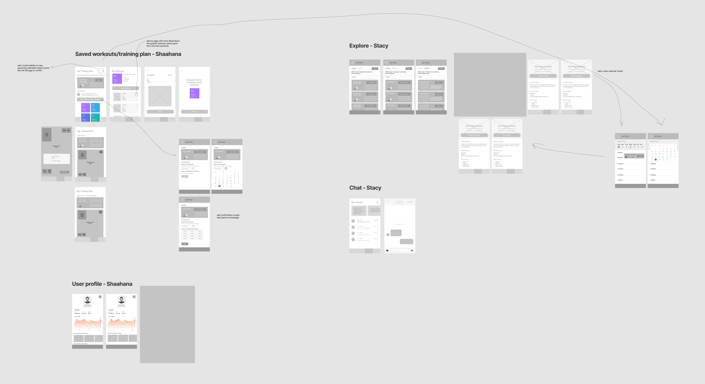
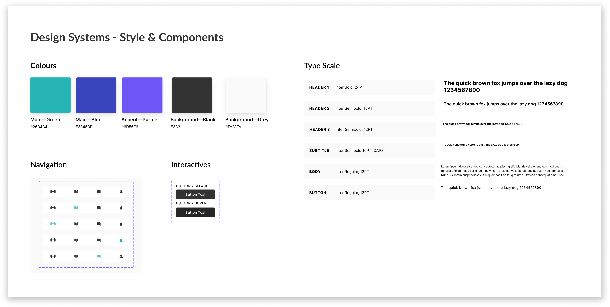

Remote Fitness Training
Reimagining the personal fitness training experience through a fitness training app enabling clients to find and train with personal trainers remotely

Overview
My friend and I wanted to get involved and meet others in the Markham UX community, so we decided to attend a virtual hack night series hosted by a Markham UX Meetup group. As part of the hack night series, we were given a problem to solve, and were challenged to design a product to help tackle the problem.
Project Details
TEAM: Shaahana Naufal & I
TIMELINE: ~7 evenings in April 2021
METHODS: Persona creation, user flows, information architecture, wireframes, prototyping

The process
Understanding the problem
User Personas
After taking a look at the resources given in the brief and then conducting some research of our own, we felt ready to consolidate all that we learned about the problem into two user personas. We created a persona for a personal trainer, and one for a gym attendee. The realistic representations of our key audiences we created really helped to keep our design decisions aligned to our audiences moving forwards.

Discovery Session
After creating the personas, we felt comfortable in moving on towards discovery & then crafting the problem statement.

Ideation
Feature Ideation
We began the ideation stage by coming up with ideas for the features we wanted to include in our app. We then reflected on the motivations, pain points, and problems faced by our audiences and then prioritized the features we were to build out.

Information Architecture
Based upon the feature ideation, we decided to then decide on a general idea of how we were going to structure the app. The final iteration of IA is shown below, but before this one we had a previous iteration.

User Flows
User flows were then created based off the main features we wanted to include and the IA we created. Crafting the user flows was a key step in allowing us to see the bigger picture, but also to help create as seemless of a user experience possible throughout the apps. User flows were essential in understanding how all journeys will tie in together and to prevent from getting lost in features.

Lo-fi Wireframes
ITERATION #1
The first iteration of lo-fi focused on creating the designs for each part of the app:

ITERATION #2
We then did another iteration of working ideation and lo-fi wireframes, where we adjusted and put together our designs based on our user flows.

Visual Design
Design System
For the design system, we wanted the app to fun feel and motivating, yet also wanted users to feel trusting in our app to find them the right trainer for them. We went with an overall contemporary color scheme, paired with a font that was also modern and sleek.

Reflection
Key Learnings
- I learned how to build better design systems! There’s a lot that goes into one, including choosing the right icons. I also learned about creating better shadows & gradients for components that I built.
- I learned alot about incorporating a mix of illustrations and real life photos within an app. It was super challenging to be able to figure out how to make the use of both types of images work together, but the main takeaway is going back to the reasoning for the different types, the audience, and impact. For example, using real photos for classes is favorable, but having illustrations to guide the user through a workout is also favorable--and that’s okay!
Next Steps
This project was mainly for fun, but if we were to keep working on it, we would try to go back and conduct user testing and use those findings to do more iterations and revisions of the user flows to improve the organization and enhance functionalities of our product.